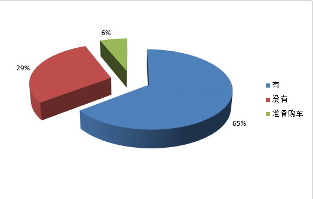
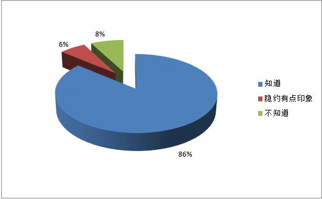
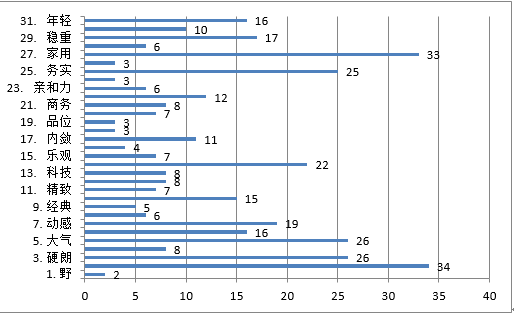
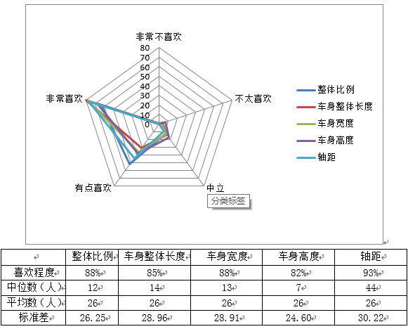
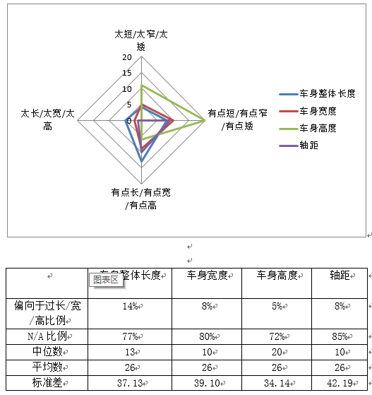
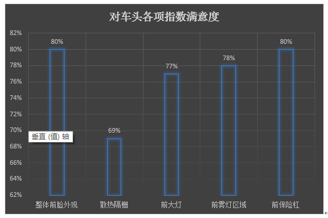
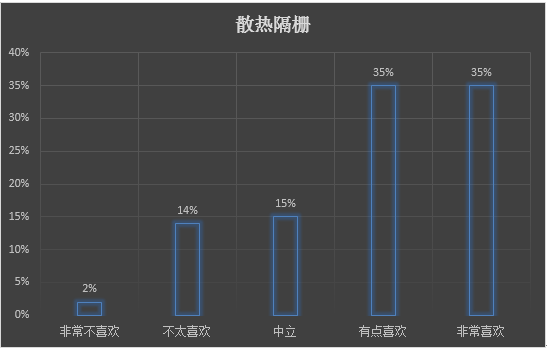
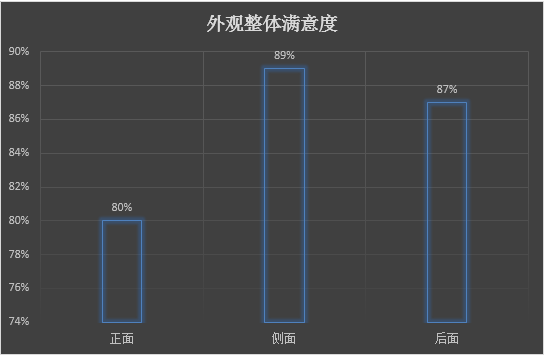
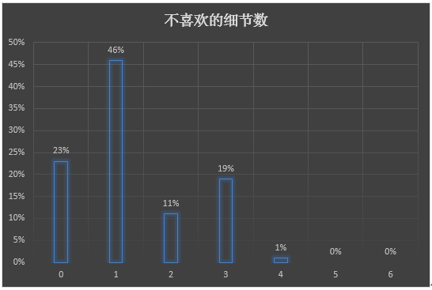
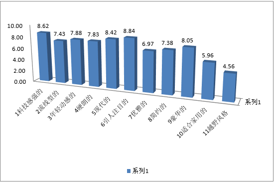

P1 【被访者基本情况】 分析：在受访的130名用户中，其中有65%的人有车，29%人没有车，6%的有购买汽车的计划。即在这部分受访用户中，以有车的为主，同时有少量用户有购车的打算。  Q1【“绅宝”品牌知名度】  分析：在受访的用户中，86%的用户知道“绅宝”这一品牌，6%的用户隐约有印象，8%的用户不知道。即超过九层的用户对“绅宝”有所耳闻，表明绅宝在用户中的知名度很好。
Q2【品牌印象】  分析：在“听说过‘绅宝’品牌”的用户中，“绅宝”品牌给用户留下的最深的印象和感觉为“城市”和“家用”，其他比较深刻的印象为“硬朗”、“大气”、“务实”、“动感”、“休闲”、“年轻”、“现代”等。
A1【外观评估】  整体比例 车身整体长度 车身宽度 车身高度 轴距 喜欢程度 88% 85% 88% 82% 93% 中位数（人） 12 14 13 7 44 平均数（人） 26 26 26 26 26 标准差 26.25 28.96 28.91 24.60 30.22 分析：根据雷达图可以看出，受访的用户中对车展中汽车的整体比例、车身整体长度、车身宽度、车身高度、轴距喜欢程度比例分别为88%、85%、82%、93%，用户对这些都比较喜欢，其中对轴距的喜欢程度最高。由标准差可知，车身高度的喜欢程度波动最小，轴距的喜欢程度波动最大。
A2【外观不足】  车身整体长度 车身宽度 车身高度 轴距 偏向于过长/宽/高比例 14% 8% 5% 8% N/A比例 77% 80% 72% 85% 中位数 13 10 20 10 平均数 26 26 26 26 标准差 37.13 39.10 34.14 42.19 分析：根据雷达图可以看出，受访的用户中，认为车身整体长度过长过长/宽/高，有14%；认为车身宽度过长/宽/高，有8%；认为车身高度过长/宽/高，有5%；轴距过长/宽/高，有8%。而对车身的长、宽、高度以及轴距没有什么意见的比例分别为77%、80%、72%、85%，其中轴距的没有意见比例的最大，这与前提中的用户对轴距的喜爱程度最高相响应。由标准差可知，受访的用户对于车身高度的观点波动较小，而轴距的看法波动较大。
A3【车头评估】  整体外观满意度达80%，除散热隔栅外其他各项评价均较高。 另外，44.6%受访者对车头各项指数均表示满意（各项评分均为4及4以上）。  根据受访者对散热隔栅的评价统计得出，较多人选择了不太喜欢或中立，而只有极少数人选择非常不喜欢，因此可以看出该车对散热隔栅的设计没有较大失误但也缺乏吸引顾客的亮点。
A3-A5【外观整体】  根据数据显示，受访者对该车外观评价总体较高，均达到80%，其中正面车头外观略有欠缺，根据A3中数据分析结果，可以对散热隔栅进行改进。
A6  23%受访者对该车没有不喜欢的细节，仅有极少数受访者对该车有多处不喜欢的细节，可见该车整体外观受到大众的喜爱。
A7【外观印象】  分析：共有130人参与评价，对汽车外观风格的每一个特点的平均分数如上图所示。从平均分数上可以看出，评价者认为该车外观中，“科技感较强”、“流线型”、“年轻动感”、“硬朗”、“现代”、“引人注目”、“简约”、“豪华”这八个特点比较突出，而“优雅”、“适合家用”、“越野风格”这三个特点相比之下则不够突出。
A8【外观总体评分】 分析：从柱状图可知，共有129人对车的总体外观进行了评价，其中没有人选择“不太喜欢”和“非常不喜欢”，有9%的评价者选择“中立”，另有90%的评价者选择“有点喜欢”和“非常喜欢”，这说明这部汽车的总体外观受到绝大多数人的喜爱。
A9【车型评价】 分析：从以上两图可知，共有129人参与评价，其中超过80%的评价者选择“有点喜欢”和“非常喜欢”，超过10%的评价者对该车型持中立态度，只有6%的评价者选择“不太喜欢”和“非常不喜欢”，这说明大部分受访者比较认可该车型，但仍有一小部分受访者对此车型保持中立甚至持否定态度。
A10【内饰评估】 评价者评分标准： 非常不喜欢 不太喜欢 中立 有点喜欢 非常喜欢 1 2 3 4 5 分析: 共有130人参与评价，每个评价科目的平均分数如上图所示。除方向盘的造型平均分接近4分，其他所有科目的平均分数均高于4分，这说明汽车内饰绝大部分细节受到评价者的好评，这正与该车的总体外观评价和车型评价相对应。
A11【内饰偏好排序】 分析：由以上两表可知，最受人喜欢的内饰细节是大屏设计，最不不受人喜欢的内饰细节是方向盘的设计；与此相仿，在上题中，大屏设计非常受到评价者的喜爱，而相比之下，方向盘的设计则显得不够吸引评价者。因而，为了更好地完善该种汽车的内饰细节，可以从汽车的方向盘的设计着手改进。
A12【内饰风格评估】 在关于汽车内饰风格篇，数据偏向于科技，动感，豪华，现代，吸引注意。但总体风格应偏向于家庭生活日常，越野风格尽量避免。
A13 【仪表盘偏好】 数据显示，直接触控或者触控板都比较受欢迎，注意避免按钮式。
A14【三排座椅偏好】 第三排座椅不需要比例稍高于需要的比例 A15 【内饰总体评分】 数据显示，受访者对于该车的认可度比较高，基本达到90%。
A16【其他建议】 您对这辆车还有什么其他的建议？ 具体细节：1、车门的问题比较多。门体有些厚重，门板上方凹形不实用，门把手不够大气以及开门安全性问题。 2、方向盘设计过于保守，没有科技动感。 3、大灯可以更加大气。 4、增加智能互联功能。 整体风格：车型希望更加大气，流畅，避免塑化感。
Q3【基本配置】 本图表示参与调查车主认为超出预期的配置。从图中可以看到最令人眼前一亮的功能是ACC自适应巡航，达到40%，从中可以看出车主对于行驶安全性的重视，以及看到科技渗透到速度控制的惊喜之情。另外，全景天窗，前排座椅加热／通风，手机互联三项功能几乎并列以25%排在关注榜第二位，这三个功能都致力于使乘客在车中更舒适。可以看出在安全性之外，车主也追求更好的乘车体验。
Q4【随机配置】 在可有可无的配置中，第二排靠背角度调节以37%排在第一，可能是因为人们从来没有接触过这种功能并且认为其与驾驶无关。另外疲劳驾驶提醒／超速报警提醒以34%比例排在第二。自动防炫目内后视镜和大灯自动点亮两项与灯光相关的配置以18%的比例排在第三。
Q5【意愿配置】 关于车主想要增加的配置，在17个样本中，前后泊车雷达与行车记录均以17%的比例占据头名。两项功能都是安全性质，包括在防止停车低速行驶的碰撞和为潜在的事故提供证据。其他选项包括四轮电子辅助刹车，esp，自动驾驶，无线互联，自动导航，自动悬挂，抬头显示，外后视镜除雾，并线辅助，零胎压驾驶，无钥匙进入。很容易看出在其他选项中还是安全性配置占绝大多事，说明安全性还是车主追求的首要目标。
Q6【前瞻性配置】 在前瞻性配置打分中，主动刹车／主动安全系统以4.3分排在第一，车道偏离预警系统以4.1排在第二，再一次说明了安全性是车主最看重的性能。另外，手势控制出人意料地以3.0分排在最低，并且与其他功能的分数有较大差距，反应了车主对一些华而不实功能的排斥。
Q7【配置类型】 一级分类 由问卷结果看，顾客对于车辆的配置的五项中，操控安全类配置和舒适便利类要求较多，对于高科技配置次之，而对于信息娱乐类和灯光类要求则较低。在产品生产过程中，对于车辆的基本性能保证的前提下，可以进行高端的私人订制服务。 二级分类 舒适便利类配置 在舒适度的要求方面，各类配置需求较为平均，后排出风口、电动座椅调节、座椅通风、座椅加热都在百分之十左右，定速巡航、天窗较高在百分之十八，较少的十双区自动空调百分之八。可见，在对于舒适度方向的要求，比较大众化，可做统一配置。 操控安全 在操控安全方面，顾客普遍对于ESP，倒车雷达，倒车影像，胎压监测要求较多，占到了百分之八十三，而对于陡坡缓降，上坡辅助，车道偏离预警，变道辅助则要求较少。 信息娱乐类 在信息娱乐配置方面，中控彩色大屏，手机互联和多功能方向盘的要求较高，而对于品牌音响，4G模块和蓝牙车载电话要求较低。 高科技类 在高科技配置方面，顾客对于自动泊车，抬头显示，智能钥匙，ACC要求较高，其次是 语音识别和全液晶仪表，分别占比百分之十，WiFi无线热点和手势识别要求较低。 灯光类配置 对于灯光类配置的要求，LED大灯最多占到了近三成，LED日间行车灯，大灯自动点亮，大灯高度自动调节次之，要求较低的是氙气大灯和车内氛围灯。在满足大众口味下，可以考虑高端定制氛围灯。